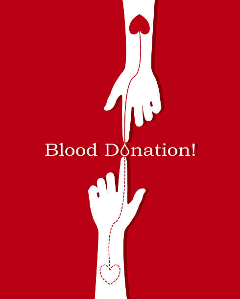

NEED OF BLOOD DONATION:
- Sometimes people have not the blood for the various reasons. They suffered from the different kind of diseases; they urgently need of the blood. There are many of the diseases such as Anemia, undergone an operation or may meet with the accident.
- Some of the patients may die for the blood need, but that time they have not available the blood. Sometimes the pregnant ladies may also suffer this problem due to the lack of blood, and they need the urgent blood n that emergency situation.

- There are patients needs of the blood of man and woman whenever necessary.
- There are the different group of blood such as A, B, AB and O. It is another important for the blood need. The blood requires must be the same group for the proper health of a patient.
- The required group must be the same while transplanting otherwise the transplantation will go in vain, and even the patient may die.
Precautions of Blood Donation
It is important to follow the advise of the local blood bank before blood donation. The guidelines may vary according to the blood banks and their requirements. Some countries require donors to fast before donation, because of specific screening methods.